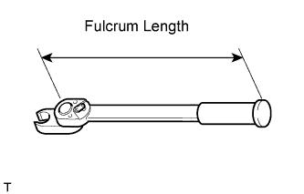
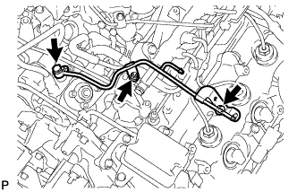
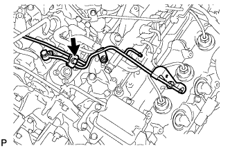
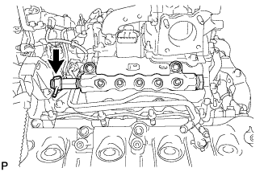
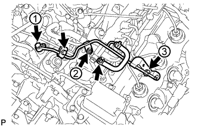
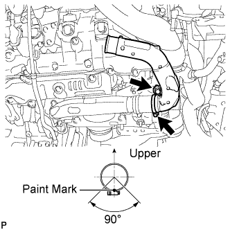
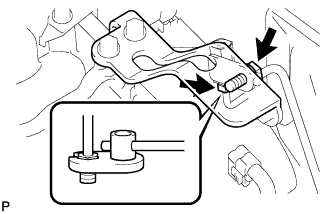

COMMON RAIL > INSTALLATION |
| 1. INSTALL COMMON RAIL ASSEMBLY RH |
 |
Install the common rail with the 2 bolts.
| 2. INSTALL INJECTION PIPE RH |
 |
Using a union nut wrench, install the 4 injection pipes.
 |
 |
Install the 4 injection pipe clamps with the 2 nuts.
| 3. INSTALL NO. 5 INJECTION PIPE SUB-ASSEMBLY |
 |
Temporarily install the No. 5 injection pipe by hand.
 |
Temporarily install the used gasket and No. 2 fuel pipe with the nut, bolt and union bolt.
 |
Temporarily install the No. 2 injection pipe clamp with the bolt.
|
Using a union nut wrench, tighten the No. 5 injection pipe ends.
Remove the bolt and No. 2 injection pipe clamp.
Remove the union bolt and gasket.
Remove the bolt, nut and No. 2 fuel pipe.
| 4. CONNECT FUEL PUMP MOTOR WIRE |
 |
Install the fuel pump motor wire bracket to the No. 3 intake manifold with the bolt.
Connect the connector to the fuel supply pump.
| 5. INSTALL FUEL FILTER TO INJECTION PUMP FUEL PIPE SUB-ASSEMBLY |
 |
Install the fuel filter to injection pump fuel pipe with the bolt.
Connect the 2 hoses to the fuel pipe.
| 6. INSTALL COMMON RAIL ASSEMBLY LH |
 |
Install the common rail with the 2 bolts.
| 7. INSTALL NO. 5 NOZZLE LEAKAGE PIPE |
 |
Install a new gasket and the leakage pipe with the union bolt.
| 8. INSTALL INJECTION PIPE LH |
 |
Using a union nut wrench, install the 4 injection pipes.
 |
Install the 4 injection pipe clamps with the 2 nuts.
| 9. INSTALL NO. 6 INJECTION PIPE SUB-ASSEMBLY |
 |
w/ EGR System:
Temporarily install the No. 6 injection pipe to the common rail LH and RH.
Install the 2 No. 2 injection pipe clamps with the 2 nuts.
Using a union nut wrench, tighten the No. 6 injection pipe ends.
 |
w/o EGR System:
Temporarily install a new No. 6 injection pipe to the common rail LH and RH.
Install the bracket to the No. 3 intake manifold with the bolt.
Install the No. 2 injection pipe clamp with the nut.
Using a union nut wrench, tighten the No. 6 injection pipe ends.
| 10. INSTALL NO. 2 FUEL PIPE SUB-ASSEMBLY |
 |
Temporarily install a new gasket and the No. 2 fuel pipe with the union bolt, nut and bolt.
Tighten the union bolt, nut and bolt in the order shown in the illustration.
Install the No. 2 injection pipe clamp with the bolt.
Connect the fuel hose to the No. 5 nozzle leakage pipe.
| 11. CONNECT ENGINE WIRE |
LH Side:
 |
Install the engine wire protector with the 2 bolts labeled A.
Connect the 8 connectors.
Install the engine wire harness bracket with the bolt labeled B.
for RHD:
Connect the wire harness with the wire harness clamp holder labeled C.
 |
Attach the 3 wire harness clamps and connect the 2 connectors.
 |
Attach the 3 wire harness clamps and connect the 4 connectors.
RH Side:
 |
Install the engine wire harness protector with the 3 bolts labeled A.
Connect the 7 connectors.
Attach the wire harness clamp.
Install the wire harness bracket with the bolt labeled B.
Install the glow plug wire harness labeled C with the nut.
 |
for RHD:
Connect the wire harness with the wire harness clamp holder.
Rear Side:
 |
Install the glow plug wire harness with the nut labeled A.
Connect the 2 common rail connectors.
Install the engine wire harness protector with the 2 bolts labeled B.
Install the 2 ground wires with the 2 bolts labeled C.
Attach the wire harness clamp.
| 12. INSTALL NO. 4 WATER BY-PASS PIPE |
 |
w/ EGR System:
Connect the 4 water hose ends, and temporarily install the No. 4 water by-pass pipe with the 2 bolts and nut.
First tighten the 2 bolts and then tighten the nut.
 |
w/o EGR System:
Connect the 3 water hose ends, and temporarily install the No. 4 water by-pass pipe with the 2 bolts and nut.
First tighten the 2 bolts and then tighten the nut.
| 13. INSTALL NO. 3 WATER BY-PASS PIPE (w/o Viscous Heater) |
 |
Connect the 2 water hose ends, and install the No. 3 water by-pass pipe with the 2 bolts.
| 14. CONNECT FUEL HOSE |
 |
| 15. INSTALL NO. 1 AIR CLEANER PIPE SUB-ASSEMBLY |
 |
Connect the No. 1 air cleaner pipe to the No. 1 intake air connector pipe.
Install the pipe with the bolt.
Tighten the hose clamp.
| 16. INSTALL HEATER WATER PIPE SUB-ASSEMBLY (w/ Viscous Heater) |
 |
Connect the 4 water hose ends, and install the water pipe with the 4 bolts.
| 17. INSTALL NO. 2 AIR CLEANER PIPE SUB-ASSEMBLY |
 |
Connect the No. 2 air cleaner pipe to the No. 2 intake air connector pipe.
Connect the ventilation hose to the oil separator.
Install the pipe with the bolt.
Tighten the hose clamp.
| 18. INSTALL NO. 4 AIR TUBE |
 |
Install the No. 4 air tube with the bolt.
Tighten the hose clamp.
 |
Install the suction hose with the bolt.
| 19. INSTALL NO. 2 AIR HOSE |
 |
Connect the No. 2 air hose with the hose clamp.
| 20. INSTALL NO. 3 AIR TUBE |
 |
Install the No. 3 air tube with the bolt.
Tighten the hose clamp.
 |
Install the wire harness bracket with the bolt.
 |
Install the ground wire with the nut, and attach the wire harness clamp.
| 21. INSTALL INTAKE AIR CONNECTOR |
 |
Connect the intake air connector to the No. 1 and No. 2 air cleaner pipes.
Install the connector with the 2 bolts.
Tighten the 2 hose clamps.
 |
Attach the 3 wire harness clamps.
w/o Viscous Heater:
Connect the connector to the water temperature sensor.
w/ Viscous Heater:
Connect the 2 connectors to the water temperature sensor and viscous with magnet clutch heater.
| 22. TEMPORARILY INSTALL NO. 1 AIR CLEANER HOSE |
 |
Temporarily install the air cleaner hose to the intake air connector.
| 23. INSTALL AIR CLEANER CAP SUB-ASSEMBLY |
 |
Connect the air cleaner cap to the air cleaner hose, and install the air cleaner cap with the 4 clamps.
Connect the mass air flow meter connector and attach the wire harness clamp to the air cleaner cap.
Attach the wire harness clamp.
 |
Align the protrusion of air cleaner cap and concave portion of air cleaner hose.
Tighten the 2 hose clamps.
| 24. INSTALL DIESEL THROTTLE BODY ASSEMBLY LH |
 |
Install a new gasket to the intake pipe.
Install the throttle body with the 2 bolts and 2 nuts.
Connect the throttle position sensor connector.
Connect the throttle motor connector.
| 25. INSTALL NO. 3 INTERCOOLER SUPPORT BRACKET |
 |
Install the bracket with the 2 bolts.
 |
for Manual Transmission:
Connect the clutch tube to release cylinder 2 way with the bolt.
Check that the union nut is tightened to the specified torque.
| 26. INSTALL NO. 1 GAS FILTER |
 |
Install the gas filter.
Connect the hose to the intake pipe.
| 27. INSTALL TUBE CONNECTOR TO FLEXIBLE HOSE TUBE (for Manual Transmission) |
 |
Temporarily install the flare nut of the tube connector to flexible hose tube to the clutch tube to release cylinder 2 way by hand.
 |
Temporarily install the tube connector to flexible hose tube with the 2 bolts.
Tighten the bolt labeled A.
| 28. INSTALL AIR TUBE SUB-ASSEMBLY LH |
 |
Install the air tube to the throttle body.
Align the embossed mark of the throttle body with the paint mark of the No. 4 air hose.
 |
Tighten the hose clamp so that it is 7 to 11 mm (0.276 to 0.433 in.) from the end of the hose as shown in the illustration.
| 29. INSTALL CLUTCH HOSE (for Manual Transmission) |
 |
Connect the clutch hose to the air tube with the bolt labeled A.
Temporarily install the clutch hose to the clutch master cylinder tube to flexible hose tube and tube connector to flexible hose tube, and fix it in place with the 2 clips.
Tighten the bolt labeled B.
Tighten the flexible hose tube.
 |
Using a 10 mm union nut wrench, tighten the 2 flare nuts of the flexible hose tube.
 |
Using a 10 mm union nut wrench, tighten the flare nut of the flexible hose tube.
| 30. INSTALL DIESEL THROTTLE BODY ASSEMBLY RH |
 |
Install a new gasket to the intake pipe.
Install the throttle body with the 2 bolts and 2 nuts.
Connect the throttle position sensor connector.
Connect the throttle motor connector.
| 31. INSTALL AIR TUBE SUB-ASSEMBLY RH |
 |
Install the air tube to the throttle body.
Align the embossed mark of the throttle body with the paint mark of the No. 4 air hose.
|
Tighten the hose clamp so that it is 7 to 11 mm (0.276 to 0.433 in.) from the end of the hose as shown in the illustration.
| 32. INSTALL NO. 2 ENGINE OIL LEVEL DIPSTICK GUIDE |
 |
Apply a light coat of engine oil to a new O-ring.
Install the O-ring to the No. 2 engine oil level dipstick guide.
Install the No. 2 engine oil level dipstick guide with the 2 bolts.
Connect the ventilation hose to the cylinder head cover RH.
 |
Connect the wire harness clamp to the No. 2 engine oil level dipstick guide bracket.
| 33. CONNECT WATER HOSE SUB-ASSEMBLY |
 |
| 34. INSTALL INTERCOOLER ASSEMBLY |
Install the intercooler assembly (Click here).
| 35. BLEED CLUTCH LINE (for Manual Transmission) |
 |
Remove the release cylinder bleeder plug cap.
Connect a vinyl tube to the bleeder plug.
Depress the clutch pedal several times, and then loosen the bleeder plug while the pedal is depressed.
When fluid no longer comes out, tighten the bleeder plug, and then release the clutch pedal.
Repeat the previous 2 steps until all the air in the fluid is completely bled.
Tighten the bleeder plug.
Install the bleeder plug cap.
Check that all the air has been bled from the clutch line.
| 36. INSPECT FOR CLUTCH FLUID LEAK (for Manual Transmission) |
| 37. CONNECT CABLE TO NEGATIVE BATTERY TERMINAL |
Connect the cables to the negative (-) main battery and sub-battery terminals.
| 38. ADD ENGINE COOLANT |
 |
Remove the engine air bleed cap.
 |
Connect a clear hose to the engine air bleed pipe.
 |
Using a wrench, remove the vent plug.
 |
Fill the radiator with TOYOTA SLLC to the radiator reservoir filler neck.
| Item | Specified Condition |
| Front heater only | 14.8 liters (15.6 US qts, 13.0 Imp. qts) |
| Front heater and rear heater | 17.6 liters (18.6 US qts, 15.5 Imp. qts) |
| Front heater with viscous heater | 15.2 liters (16.1 US qts, 13.4 Imp. qts) |
| Front heater and rear heater with viscous heater | 18.0 liters (19.0 US qts, 15.4 Imp. qts) |
|
Install the vent plug.
|
Disconnect the clear hose from the engine air bleed pipe.
|
Install the engine air bleed cap when coolant comes out.
Install the radiator reservoir cap.
Start the engine.
Maintain an engine speed of 3000 rpm for approximately 10 minutes so that the thermostat opens and air bleeding is performed.
Stop the engine, and wait until the engine coolant cools down to ambient temperature.
 |
Check that the coolant level is between the FULL and LOW lines.
If the coolant level is above the FULL line, drain coolant so that the coolant level is between the FULL and LOW lines.
| 39. INSPECT FOR FUEL LEAK |
Perform Active Test.
Connect the intelligent tester to the DLC3.
Turn the engine switch on (IG).
Start the engine.
Turn the intelligent tester ON.
Enter the following menus: Powertrain / Engine / Active Test.
Perform the Active Test.
| Tester Display | Test Detail | Control Range | Diagnostic Note |
| Test the Fuel Leak | Pressurizes fuel inside common rail and checks for fuel leaks | Stop/Start |
|
| 40. CHECK FOR ENGINE COOLANT LEAKS |
 |
Fill the radiator with coolant and attach a radiator cap tester to the radiator reservoir.
Warm up the engine.
Using the radiator cap tester, increase the pressure inside the radiator to 123 kPa (1.3 kgf/cm2, 17.8 psi), and check that the pressure does not drop.
If the pressure drops, check the hoses, radiator and water pump for leaks.
If no external leaks are found, check the cylinder block and cylinder head.
| 41. INSPECT FOR OIL LEAK |
Warm up the engine and check for an engine oil leak.
| 42. INSTALL UPPER RADIATOR SUPPORT SEAL |
 |
Install the upper radiator support seal with the 7 clips.
| 43. INSTALL NO. 1 ENGINE UNDER COVER SUB-ASSEMBLY |
 |
Install the engine under cover with the 10 bolts.
| 44. INSTALL FRONT FENDER SPLASH SHIELD SUB-ASSEMBLY RH |
 |
Install the splash shield with the clip, and then install the 3 bolts and screw.
| 45. INSTALL FRONT FENDER SPLASH SHIELD SUB-ASSEMBLY LH |
Install the splash shield with the clip, and then install the 3 bolts and screw.